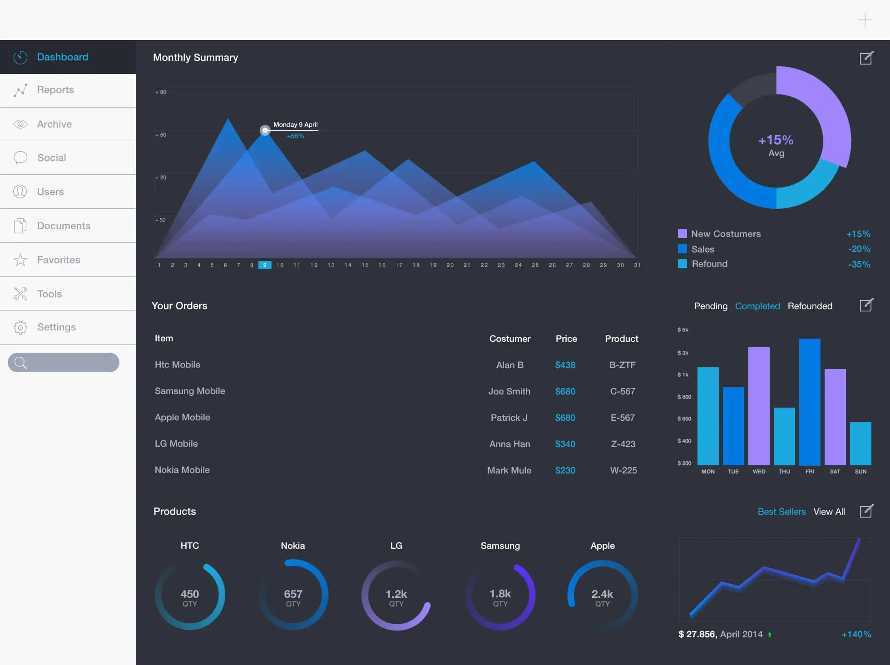

-
Prescription Reader
The prescription reader uses image recognition technology to automatically extract prescription details and ensure accurate medication management.
-
Disease Prediction
The disease prediction feature uses machine learning algorithms to analyze patient data and predict potential health concerns, allowing for early intervention and preventative measures. • The project also includes a medical insurance cost prediction feature, which uses machine learning algorithms to analyze patient data and predict the expected cost of medical insurance. This information helps patients make informed decisions about their healthcare coverage and budget accordingly.
-

ChatBot
The chat functionality allows for real-time communication between patients and healthcare providers for quick and efficient information exchange.
-
Video CAll
The video calling feature provides a convenient and accessible way for patients to consult with their healthcare providers remotely, eliminating the need for in-person appointments.
-

User DashBoard
This healthcare project offers an interactive dashboard to patients, enabling them to monitor their health status, access their medical records, and track their progress towards health goals. Additionally, the dashboard provides patients with personalized health recommendations based on their medical history, lifestyle, and preferences
-
Online medical Store
This project includes an online medical store, allowing patients to conveniently purchase prescribed medications and medical supplies online. The online store is integrated with the prescription reader feature, ensuring accurate and efficient order processing.
-
Github Link
This project aims to improve the accessibility, efficiency, and effectiveness of healthcare services, ultimately improving patient outcomes and reducing healthcare costs.Project Demo